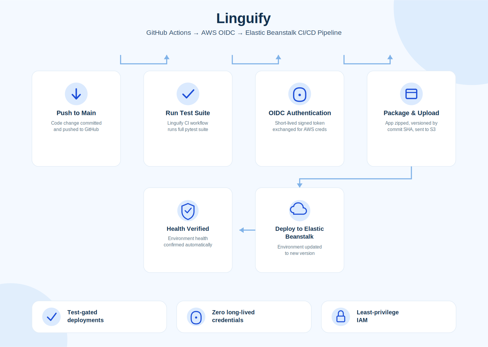

Linguify Document Translation
AI-powered multilingual document translation platform
The Challenge
Organizations operating across multiple languages often rely on manual translation workflows that slow collaboration, delay decision-making, and increase operational costs. Linguify streamlines this process by automating document translation while preserving context, formatting, and accuracy.
⚡ Impact
Reduced translation turnaround for a 12-page English document (~6,000 words) from an estimated 3–4 days to under 2 minutes through an AI-powered multilingual workflow. The application also demonstrated potential cost savings of approximately $1,500–$1,800 per document by reducing reliance on external freelance translation services.
Workflow Overview

Linguify automatically detects document language, translates content using advanced language models, validates output quality, and delivers polished, multilingual documents ready for business use.
Key Features
Context-Aware Translation
Maintains document meaning, tone, and formatting while generating accurate translations across multiple languages.
Rapid Processing
Automates complex translation workflows to reduce turnaround from days to minutes without sacrificing quality.
Enterprise Ready
Designed for secure, scalable document translation suitable for organizations operating across international teams.
Technical Architecture

The platform combines document processing, language detection, large language models, validation, and cloud infrastructure into a scalable pipeline capable of handling multilingual enterprise workflows.
CI/CD Pipeline

Every code change is automatically tested, and only deployed to production once verified. The pipeline authenticates to AWS using short-lived, cryptographically signed tokens via OpenID Connect (OIDC) — no long-lived access keys stored anywhere in GitHub, at any point in the chain.
Secretless Authentication
GitHub Actions authenticates to AWS via OIDC instead of stored access keys. Each workflow run requests a short-lived, signed identity token, scoped to a specific repository and branch, exchanged for temporary AWS credentials that expire when the job completes.
Least-Privilege IAM
The deployment role's permissions were built incrementally against real AWS errors rather than granted from a broad managed policy — scoped precisely to what this application, in this environment, in this account, actually requires to deploy.
Test-Gated Deployment
A dedicated CI workflow runs the full test suite on every push. The deployment workflow only triggers after CI completes, and only proceeds if every test passed — broken code is blocked before it ever reaches the live environment.
Technology Stack
Demonstration Access
The application relies on commercial LLM APIs and cloud infrastructure. Demonstrations are available through controlled access to manage operational costs while showcasing the complete workflow.